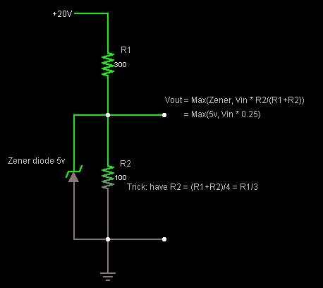
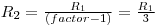
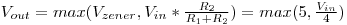
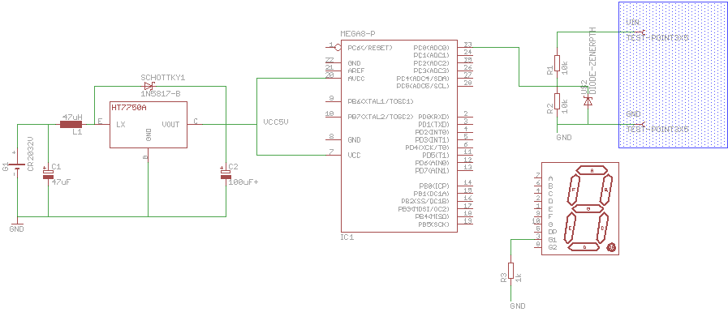
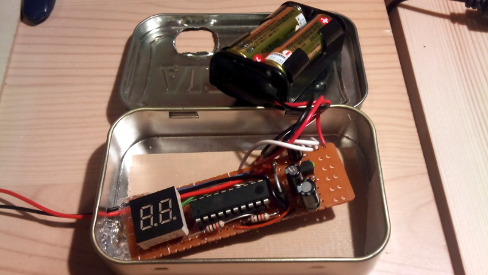
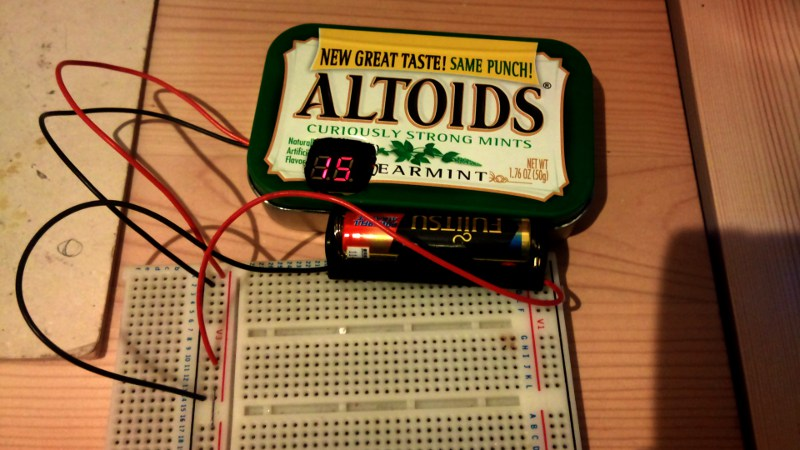

Summary
Sometime I just want to see the voltage just without turning on my voltmeter, hold the wires, change hands etc... never felt that you couse use a pair of additional hands ? Me very often. So I want a small, self powered, minimum display voltmeter that is breadboard friendly.
What it will have :
- a 2 digits 7 segment display (scavenged on a radio cassette player found in the trash)
- a button battery (small and light)
- a attiny at heart (need a ADC)
- a DC converter 5v ?
- a small switch
- breadboard friendly
Explanation
Use the ADC to read a voltage, but how to do in case it's more than 5v ? Double trick : the "zener divider". As explained on [@
http://picboard.blogspot.ca/2010/10/0-20v-digital-voltmeter-dvm-using.html this site], make a voltage divider. For instance, if you want to measure [0v;20v] range, the max division factor is max voltage / uC voltage = 20/5 = 4. Use that 4 factor to make a divider with that factor :

Don't hesitate to put big resistor, you don't want to use the power, you want to measure it. Thousand or tens of thousands are welcome, mega are ok. Let's say I pick 1ko for the R2, I need 3ko for R1 then.
Ok, so now you get max 5v ... at the condition you put max 20v. What happens when you know, sh### happens and you put more than 20v? Magic smoke. So, put a Zener diode with a 5v breakdown (5.1v is perfectly fine too). Thanks to the zener diode, you can't see more than 5v ! And under that value, you have linear reading, what you need for your voltmeter.

Source : http://picboard.blogspot.ca/2010/10/0-20v-digital-voltmeter-dvm-using.html
This will give you a nice value x in [0;1024] that you will map to [0;20] with the little X = x * 20 / 1024...
Schema

Points of interrest:
- This schema uses a battery for portability and a DC-DC 5v converter HT7750A
- The HT7705a is a lightweight so sourcing too much current out of it is going to affect badly the VCC it produces and drift away from 5v
- The capacitor to stabilize the output voltage are a must for stable reading
- All the grounds are linked together : the battery ground and the input ground
- Using a resistor scale we divide input by 2. 10kOhm are good values that don't affect much the reading.
- Using 1k resistor on the cathod of the 7 segment to keep current to minimum
- There is not one 7segment but 2 for unit and tens of volts, and the wiring is not presented here
- The 5v zener diode is here to protect the ADC from being fed with something bigger than 5v
- The micro controller is in fact a attiny861 (lots of pins and ADC)
Code
Where else could it be if not
on my google code account ?
Pictures

The inside of the beast : a ATTiny861, a 2 digit 7 segment found in the trash bin inside a cd player, a 5 V DC boost converter and 2 AAA battery for a nice 5v

Once closed, reading are not too bad (^_^)v (-> 15 is to be read as 1.5v ... there was no dot
on the scavenged 7seg)
Links
Voltage reading with a Atmel
HT7750A : 5v DC-DC converter
Project
- With a arduino but howto divert the internal 1.1v reference to measure arduino's power rail ... very interresting.
- The general idea of what I want to do